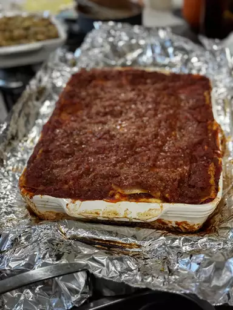

lasagna

Classic lasagna
A hearty classic lasagna for a family meal night.
ingrediants
- meat
- onion and garlic
- tomato
- sugar
- spice and seasoning
- Lasagna noodles
- cheese
- egg
steps
- Make the meat sauce.
- Cook the noodles.
- Make the ricotta mixture.
- Layer the lasagna according to the recipe instructions.
- Cover with foil and bake.
- Let the lasagna rest before serving.